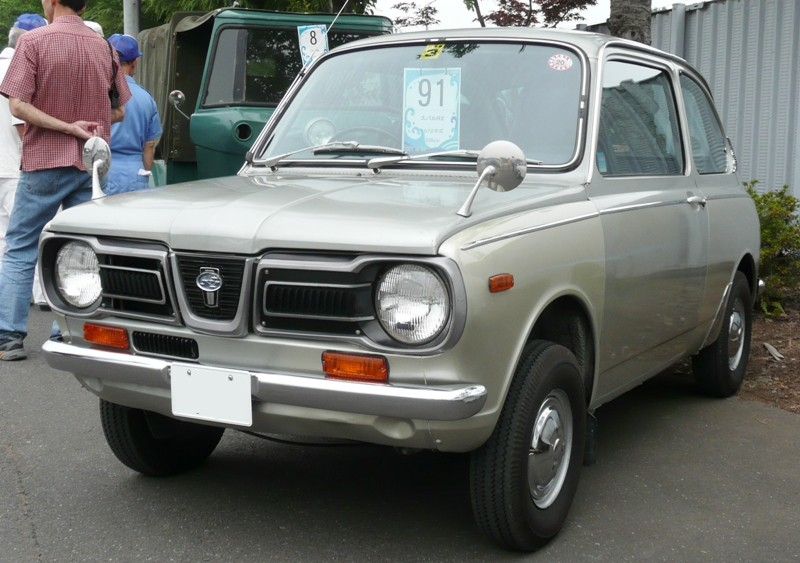
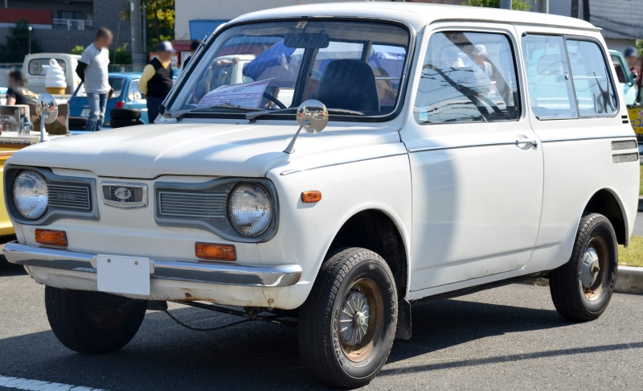

Subaru R-2 — кей-кар, выпускавшийся с 1969 по 1972 год.
Subaru R-2 был запущен в производство 8 февраля 1969 года. За один месяц было заказано 25000 моделей. Продажи начались в августе того же года.
В начале 1970-х годов японское правительство приняло закон о сокращении выбросов, в связи с чем 7 октября 1971 года двигатель Subaru был модернизирован до двухтактного двигателя с водяным охлаждением (до этого охлаждение было воздушным), получившего название EK34. Также был изменён экстерьер: спереди была добавлена фальшрадиаторная решётка, придающая автомобилю более современный вид и корпоративный стиль.

Изначально выпускались только двухдверные седаны, а с 16 февраля 1970 года выпускались также трёхдверные хетчбэки. Мощность двигателя у седана составляет 23 кВт (31 л. с.), а у хетчбэка — 19 кВт (26 л. с.). Кодовое обозначение седана — K12, кодовое обозначение фургона — K41.
18 февраля 1970 года в производство были запущены высокопроизводительные версии R-2 — R-2 SS с двойным выхлопом и увеличенным крутящим моментом с 37 Н·м при 6400 об/мин до 74 Н·м при 7000 об/мин, а 5 октября того же года в модельный ряд была включена комплектация с более высоким уровнем отделки салона — R-2 GL.